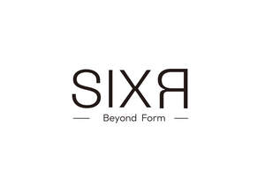

Trade Mark Journal No.2025/021 23 May 2025
UK00004201567 10 May 2025 (35,42)

- Class 35
- Retail services in relation to fashion accessories; Promoting the sale of fashion goods through promotional articles in magazines; Fashion show exhibitions for commercial purposes; Retail services connected with the sale of clothing and clothing accessories; Retail services in relation to clothing accessories; Mail order retail services for clothing accessories; Online retail services relating to clothing; Online retail store services relating to clothing; Online retail services relating to handbags; Online retail services relating to jewelry; Retail services in relation to downloadable virtual clothing; Mail order retail services for clothing; Organization of fashion shows for promotional purposes; Organisation of fashion shows for commercial purposes; Organization of fashion parades for sales promotion purposes; Online retail services in relation to downloadable virtual clothing; Online retail services in relation to downloadable virtual footwear; Online retail services in relation to downloadable virtual handbags; Mail order retail services connected with clothing accessories; Promoting the sale of goods and services of others through promotional events; Retail store services in the field of clothing; Retail services relating to jewelry; Communication media (Presentation of goods on -), for retail purposes; Online retail services in relation to downloadable virtual works of art; Advertising services relating to the sale of goods; Online retail services relating to toys; Provision of an online marketplace for buyers and sellers of goods and services; Arranging business introductions relating to the buying and selling of products; Business merchandising display services; Retail services relating to clothing; Retail services relating to fake furs; Retail services in relation to downloadable virtual works of art; Online advertising; Presentation of goods on communications media, for retail purposes; Retail services in relation to clothing; Arranging subscriptions of the online publications of others; Sales promotions at point of purchase or sale, for others.
- Class 42
- Design of fashion accessories; Fashion design; Design of clothing; Design of clothing accessories; Jewelry design; Clothing design services; Jewellery design services; Design for others in the field of clothing; Dress design; Packaging design; Design of artwork; Dress design services; Designing of clothing; Design of headgear; Design of ornamental layouts; Textile design services; Toy design; Pattern design; Design and development of new products; Design of carpets; Design services for exhibitions; Hat design; Art work design; Commercial art design; Design services relating to artwork; New product design; Design services; Visual design; Design of stationery; Design of products; Design services for art-work; Design of china; Illustration services (design).
Qijun Chen